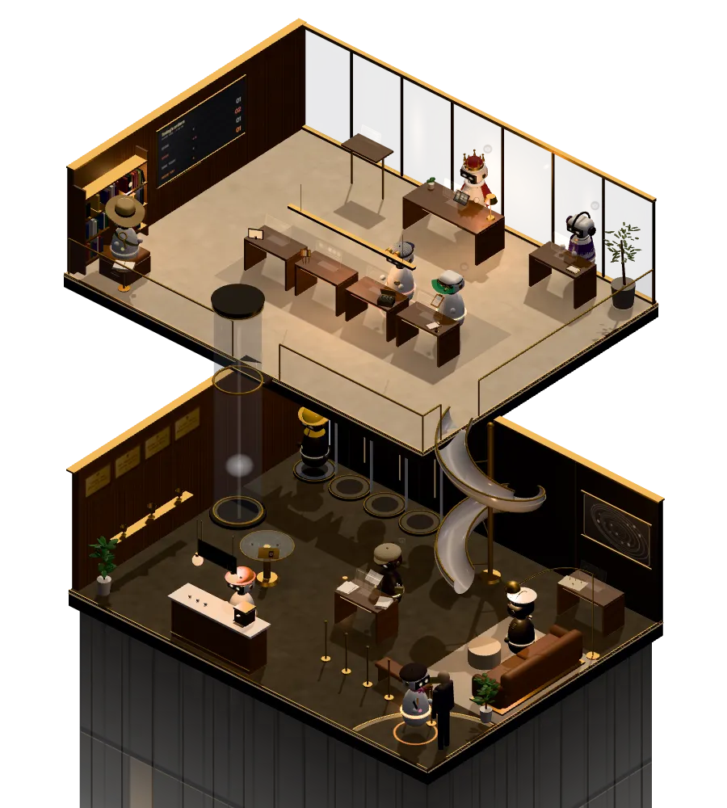

Your AI crew

Status view V
Click a robot to see what it is doing.
Claude Code, live
Talk to the King like a chat. Questions get an answer here in seconds. Orders go straight to the live King, who does the work and reports back right here.
Ask about the board, answer a question in your own words, or give the crew an order.
Saved on this device only. Every change shows right away.
Needs you, stuck and done keep their colors, so they always read at a glance.
Off until you turn it on. Quiet from 10 PM to 7 AM, except hail.
It roams both floors. When a robot needs you, it goes and plays with the cat. Y finds it.